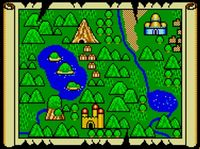

De: La Frikipedia, la enciclopedia extremadamente seria.
De: La Frikipedia, la enciclopedia extremadamente seria. De: La Frikipedia, la enciclopedia extremadamente seria.
| De la serie Países del planeta tierra: | |||||
| Arrabal de Vigo | |||||
|---|---|---|---|---|---|
| |||||
| Lema: Quiero que me dan subvenciones | |||||
| Himno: Unha noite na eira do trigho
| |||||
| 
| |||||
| Capital | Vigo, aunque según La Frikipedia es Pontevedra | ||||
| Mayor ciudad | Tui | ||||
| Lenguas oficiales | Galaicoportugués | ||||
| Gobierno | Dictadura del marinero | ||||
| {{{título_líder}}} | Cacikus máximus | ||||
| Área | Galicia | ||||
| Población | {{{estimación_población}}} | ||||
| Moneda | Peseteuros | ||||
| Zona horaria | {{{zona_horaria}}} | ||||
| Dominio Internet | .po | ||||
| Código telefónico | Usan vasos comunicantes
| ||||
| {{{notas}}} | |||||
La provincia de Pontevedra es la zona donde Jesús de Neanderthal inventó el taparrabos. Su perímetro actual corresponde a los terrenos que en el año 34000 antes de Lugh tenía Oubiña como Coto Señorial hasta que se enfrentó a Baltar por el amor de una mujer y fue destruido por Alberto Núñez Feijóo.
Actualmente la provincia se encuentra invadida por miles de eucaliptos que dan de comer ENCE en Pontevedra y dan ese olor tan dulzón y adictivo a su capital.
Limita al norte con el reino de Santiago de Compostela, al noroeste con Chantada, al este con el reino de Ourense, al suroeste con el principado de A Cañiza, al sur limita con la provincia de Vigo y al oeste con el Océano Antártico.
En esta provincia se encuentra el parque antárquico das Illas Atlántidas, que son los restos orgánicos de la Atlántida.

|
Galiza |
|---|---|
| Xeografía | |
| A Coruña | A Laracha | Carballo | Cariño | Cedeira | Ferrol | Fisterra | Monte do Gato | Santa Comba | Santiago de Compostela A Gudiña | Allariz | Arnoia | Bande | Beade | Carballiño | Celanova | Lobios | Louredo | Maside | O Pereiro de Aguiar | Ourense | Ribadavia | Verín | Xinzo de Limia | |
| Personalidades | |
| Políticos
Outros
| |
| Outros | |
| Galicia Bilingüe | Heredeiros da Crus | Koruño | La Coz de Galicia | Luar | Manual del gallego perfecto | Ourensanos | Peinador | Prestige | Suevos | Vigués | Xunta de Galicia |
Autor(es):